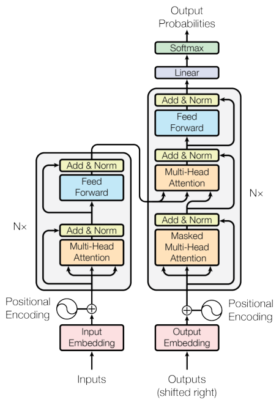
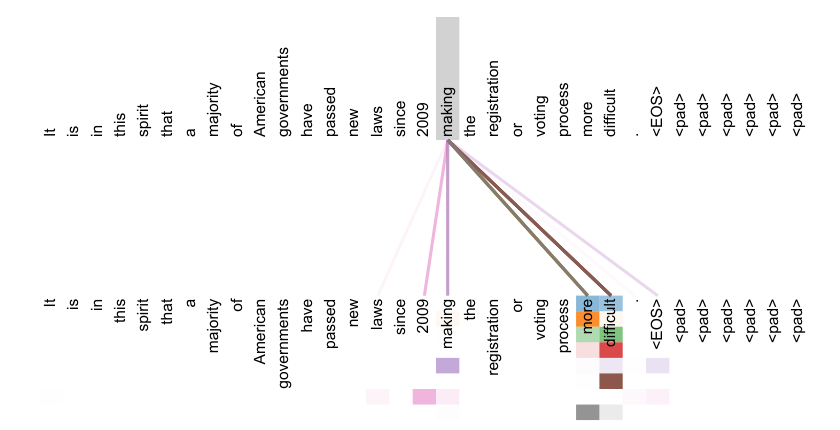

The transformer kept attention and deleted the recurrence
In 2017 a translation model trained in 3.5 days on eight GPUs and beat every published English-to-German score, ensembles included.
Attention Is All You Need
Read the paperThe dominant sequence transduction models are based on complex recurrent or convolutional neural networks in an encoder-decoder configuration. The best performing models also connect the encoder and decoder through an attention mechanism. We propose a new simple network architecture, the Transformer, based solely on attention mechanisms, dispensing with recurrence and convolutions entirely. Experiments on two machine translation tasks show these models to be superior in quality while being more parallelizable and requiring significantly less time to train. Our model achieves 28.4 BLEU on the WMT 2014 English-to-German translation task, improving over the existing best results, including ensembles by over 2 BLEU. On the WMT 2014 English-to-French translation task, our model establishes a new single-model state-of-the-art BLEU score of 41.8 after training for 3.5 days on eight GPUs, a small fraction of the training costs of the best models from the literature. We show that the Transformer generalizes well to other tasks by applying it successfully to English constituency parsing both with large and limited training data.1
Three years before the transformer, attention already worked
In 2014 the strongest neural translation systems read a sentence the way a telegraph clerk received one: one word at a time. Sutskever, Vinyals, and Le at Google used "a multilayered Long Short-Term Memory (LSTM) to map the input sequence to a vector of a fixed dimensionality," then a second network to unspool the translation from that one vector.2 The system scored 34.8 BLEU (a 0-to-100 score grading machine translation against human references) on WMT 2014 English-to-French, ahead of the phrase-based system's 33.3, and one tell: reversing the source words "improved the LSTM's performance markedly."2 A model that translates better when the sentence arrives backwards has a straining memory.
Bahdanau, Cho, and Bengio diagnosed the flaw that same year: "we conjecture that the use of a fixed-length vector is a bottleneck." Their fix let the model "(soft-)search for parts of a source sentence that are relevant to predicting a target word."3 That mechanism is attention, and it was three years old when the transformer arrived. But the recurrent machinery stayed: the encoder still read in order; attention only chose where the decoder looked.3
The 2017 paper concedes this in its second sentence: the best existing models already "connect the encoder and decoder through an attention mechanism."1 Its contribution was a deletion.
We propose a new simple network architecture, the Transformer, based solely on attention mechanisms, dispensing with recurrence and convolutions entirely.1
The reason removal mattered is hardware. Recurrence is a commitment to compute in sequence: the representation of word 80 cannot begin until word 79 is finished, so a GPU, built for thousands of simultaneous operations, waits in line. Table 1 states the difference as accounting: a recurrent layer needs O(n) sequential operations for a sentence of n words, a self-attention layer O(1).1 The work acts at one layer of the machine-learning stack, model architecture: the wiring a network computes through, as distinct from its data, its objective, or its deployment.
How one word consults its neighbors
A sentence no model has seen: "The crane lifted the last container onto the barge." On its own, "crane" could be a dockside machine or a long-legged bird. Nothing inside the word settles it; the neighbors do. "Lifted," "container," and "barge" vote machine. A representation of this "crane" must be assembled from its context, and attention is that consultation, made arithmetic.
For every word, the model multiplies the word's embedding (its raw numeric representation) by three learned matrices, producing three small vectors. Jay Alammar's 2018 walkthrough states the roles plainly: "for each word, we create a Query vector, a Key vector, and a Value vector."4 The query is the question a word asks of its context. The key is what a word advertises about itself. The value is the content it hands over if chosen.
"Crane" compares its query against every word's key, its own included; the comparison is a dot product, a similarity score. A softmax turns the scores into positive weights summing to one. Then "crane" collects a weighted blend of every word's value. "Lifted" and "barge" contribute heavily; "the" contributes almost nothing. The result is a new vector for "crane," mixed with exactly the context that resolves it toward machinery. Every word runs this consultation simultaneously. None waits.
An attention function can be described as mapping a query and a set of key-value pairs to an output, where the query, keys, values, and output are all vectors.1
The paper compresses the routine into one line: Attention(Q, K, V) = softmax(QKT/√dk)V.1 Every symbol is a step already taken: QKT is all the comparisons at once, softmax the weighting, V the blending. The one new term is the division by √dk, the key vectors' dimension, and the authors state their suspicion: "for large values of dk, the dot products grow large in magnitude, pushing the softmax function into regions where it has extremely small gradients."1 Scaling keeps every comparison in play. And the line is matrix multiplications plus a normalization, the operations GPUs exist to run.
Eight searches in parallel and a clock made of sine waves
One consultation per word is too few. The "crane" has two questions pending, a grammatical one (what did it lift?) and a lexical one (machine or bird?), and a single softmax must squash both into one set of weights. The paper's answer: "In this work we employ h=8 parallel attention layers, or heads."1 Each head has its own three matrices and works in 64 of the model's 512 dimensions, so "the total computational cost is similar to that of single-head attention with full dimensionality."1 Eight narrow searches for the price of one wide one. Nobody assigns the heads their specialties; training sorts out the division of labor.
The deletion also cost word order. A dot product has no idea where a word sits, and "The barge lifted the last crane onto the container" contains the same words and would produce the same comparisons. Recurrence got order free of charge by reading in sequence; the transformer buys it back as data. Before the first layer, the model adds to each embedding a positional signature of sines and cosines at wavelengths spaced from 2π to 10000·2π, a distinct ripple for every position.1 The authors chose sinusoids on a stated hunch: "we hypothesized it would allow the model to easily learn to attend by relative positions."1 Position becomes one more ingredient for queries and keys to match on.
Where the three attentions sit

The full machine keeps the 2014 division of labor: an encoder builds representations of the source, a decoder emits the translation, each a stack of N=6 layers alternating multi-head attention with per-word feed-forward networks.1 Attention appears in three places.1 In the encoder, self-attention: keys, values, and queries "come from the same place," every source word consulting every other. In the decoder, self-attention again, but masked: the decoder still emits one word at a time and must not peek at words it has not yet produced, so illegal connections are masked, "setting to −∞" their softmax inputs.1 Third, bridging the stacks, encoder-decoder attention: "the queries come from the previous decoder layer, and the memory keys and values come from the output of the encoder."1 That third one is Bahdanau's 2014 mechanism, demoted from special guest to one component among peers.
The case runs on two arguments. Hardware: O(1) sequential operations per layer means training computes every position of every sentence simultaneously. Learning: information between any two words now travels through a single attention step, and "the shorter these paths between any combination of positions in the input and output sequences, the easier it is to learn long-range dependencies."1 The same table records the price: self-attention costs O(n²·d) per layer, every word consulting every word, so doubling sentence length quadruples the work.1
What 3.5 days on eight GPUs proved
The demonstration is two translation benchmarks. On WMT 2014 English-to-German, trained on about 4.5 million sentence pairs, the big transformer scored 28.4 BLEU, better than every published result "including ensembles by over 2 BLEU."1 On English-to-French, trained on 36 million sentences, it set a single-model state of the art of 41.8.1 Three years earlier, Sutskever's LSTM had earned its reputation with 34.8 on the same French benchmark.2 A footnote: the June 2017 preprint said 41.0 on French; the revision says 41.8, so first readers saw the smaller claim.1
The quality numbers were the headline; the cost numbers were the argument. The big model, 213 million parameters, trained in 3.5 days on eight NVIDIA P100 GPUs, about 2.3×10¹⁹ floating-point operations, "a small fraction of the training costs of the best models from the literature."1 The base model, 65 million parameters, trained in 12 hours.1
Both benchmarks are translation, a task with abundant paired data and sentence-length inputs. The authors' generalization test is modest: a 4-layer transformer reached 91.3 F1 on English constituency parsing trained on the small Wall Street Journal corpus alone, answering the narrow worry that the architecture was a translation-only trick.1 Nothing in the paper claims, or tests, language understanding in general. What it proved: where recurrence was the reigning tool, attention alone matched or beat it, at a fraction of the training time.
The halves outlived the whole
What held up first was the hardware bet: training that never waits scales with the GPUs money can buy, and the models that followed took the invitation. In June 2018, OpenAI's first GPT paper stated its architecture plainly: "we use a multi-layer Transformer decoder," a variant of the right-hand stack of Figure 1, trained to predict the next token.5 Four months later, Google's BERT took the other half: "Bidirectional Encoder Representations from Transformers," the left-hand stack alone.6 The pairing turned out to be separable, and most modern large language models run on the decoder half.
The decoder-only variant GPT adopted traces through a 2018 Google paper whose authors include Lukasz Kaiser and Noam Shazeer, two of the original eight: the authors were revising their own design.5 And unbundled is not abandoned: encoder-decoder remains the natural fit for turning one sequence into another.
The authors also made a forecast specific enough to grade. The conclusion promises to "extend the Transformer to problems involving input and output modalities other than text," naming images, audio, and video.1 In 2020 the Vision Transformer delivered the image half: "a pure transformer applied directly to sequences of image patches can perform very well on image classification tasks."7 A hit, with an asterisk: ViT's authors include Jakob Uszkoreit of the original eight, so the fulfillment came partly from the circle that made the forecast. Quanta Magazine's 2022 survey, one outside gauge, quotes Atlas Wang of UT Austin: "I think the transformer is so popular because it implies the potential to become universal."8 Semantic Scholar records more than 180,000 citations as of July 2026, the bluntest measure of use.9
The hope in Section 4 is still on trial
One claim has aged differently, the one that looked most generous when written.
As side benefit, self-attention could yield more interpretable models. We inspect attention distributions from our models and present and discuss examples in the appendix.1

A map drawn for "The crane lifted the last container onto the barge" shows heavy weights from "crane" to "lifted" and "barge," and it reads like the model showing its work: here is why it decided machine over bird. That reading is the claim on trial. In 2019, Jain and Wallace found that "one can identify very different attention distributions that nonetheless yield equivalent predictions," and concluded that standard attention modules "should not be treated" as meaningful explanations.10 If a different set of arrows produces the same output, the arrows were not the reason. Their experiments ran mostly on recurrent models with attention bolted on, so they indict the habit of reading attention maps, not this paper's model specifically.10 And the rebuttal came within months: Wiegreffe and Pinter argued the conclusion "depends on one's definition of explanation" and showed the adversarial maps "don't perform well on the simple diagnostic."11 The strong version, that the map gives the reason, did not survive intact; the weak version is still contested. The paper itself only ever said "could."
- Queries, keys, values, and heads: still the core of GPT-style and BERT-style models.
- The hardware bet: O(1) sequential operations made training scale with parallel compute.
- The forecast of images, audio, and video, graded against ViT in 2020.
- Attention maps as explanations: a contested hope, disputed in both directions since 2019.
- The O(n²) cost in sequence length, which the paper flags by proposing "local, restricted attention."
- The encoder-decoder framing: incidental to the parts, dropped by most modern LLMs.
As a reading of its own evidence the paper is modest and almost entirely right: it flagged its own costs, hedged its own hopes, and proved the narrow thing it set out to prove.1 The grand claims attached later, universality above all, belong to the papers that tested them.8 The original is still worth an evening: fifteen pages, a mechanism to follow block by block through Figure 1, and a field's central artifact claiming less than history would.1 The deletion held.
Sources
- arXiv · Vaswani et al., "Attention Is All You Need" (NeurIPS 2017)
- arXiv · Sutskever, Vinyals & Le, "Sequence to Sequence Learning with Neural Networks" (2014)
- arXiv · Bahdanau, Cho & Bengio, "Neural Machine Translation by Jointly Learning to Align and Translate" (2014)
- jalammar.github.io · Jay Alammar, "The Illustrated Transformer" (2018)
- OpenAI · Radford et al., "Improving Language Understanding by Generative Pre-Training" (2018)
- arXiv · Devlin et al., "BERT: Pre-training of Deep Bidirectional Transformers for Language Understanding" (2018)
- arXiv · Dosovitskiy et al., "An Image is Worth 16x16 Words: Transformers for Image Recognition at Scale" (ICLR 2021)
- Quanta Magazine · Stephen Ornes, "Will Transformers Take Over Artificial Intelligence?" (2022)
- Semantic Scholar · Paper record for arXiv:1706.03762, citation count (retrieved 2026-07-16)
- arXiv · Jain & Wallace, "Attention is not Explanation" (NAACL 2019)
- arXiv · Wiegreffe & Pinter, "Attention is not not Explanation" (EMNLP 2019)